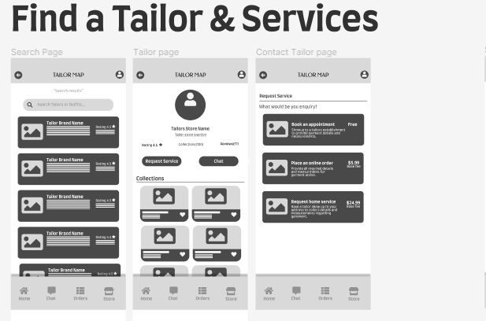
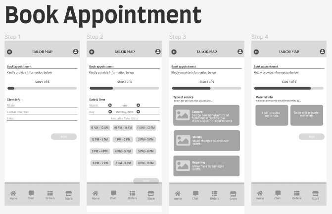
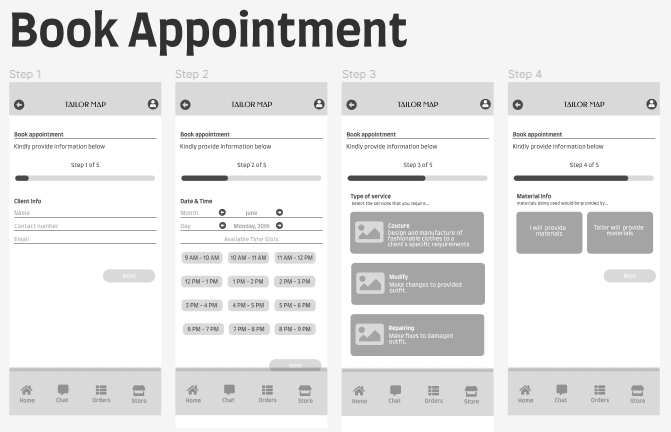
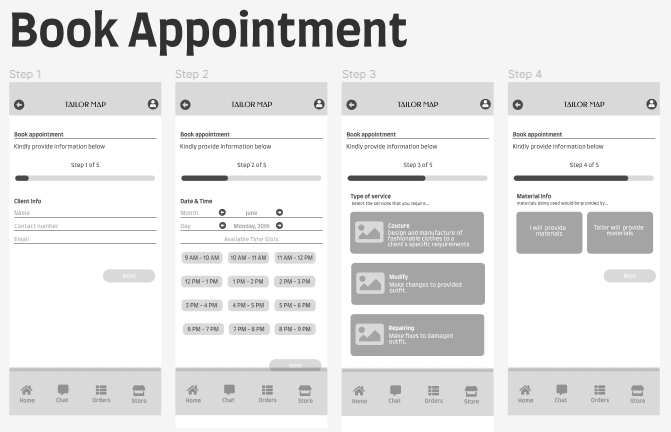
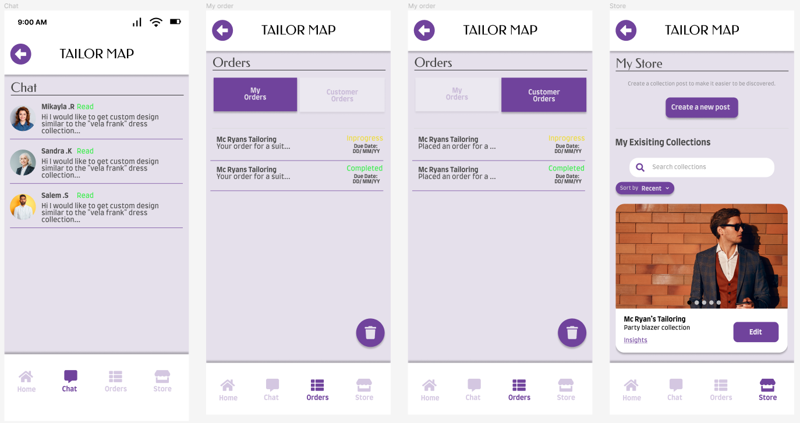
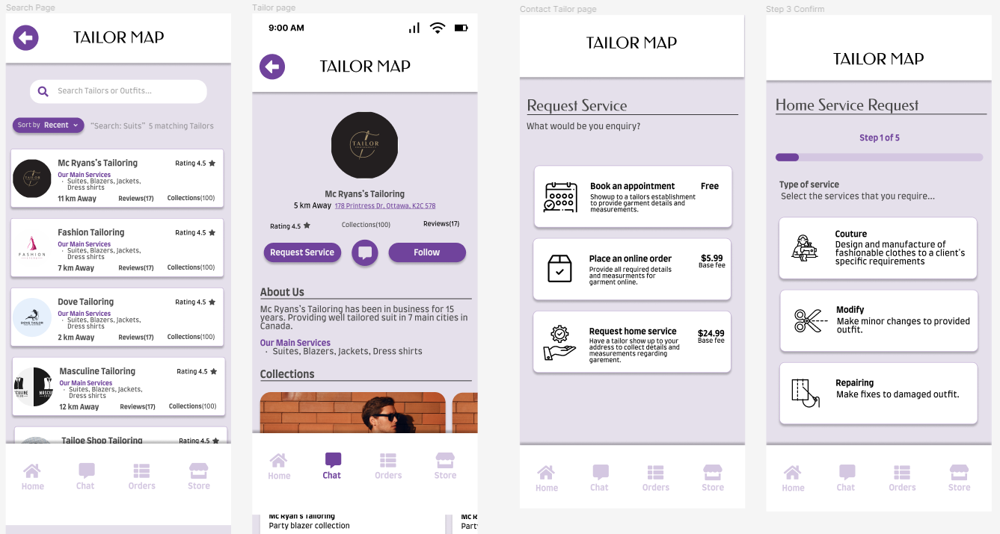
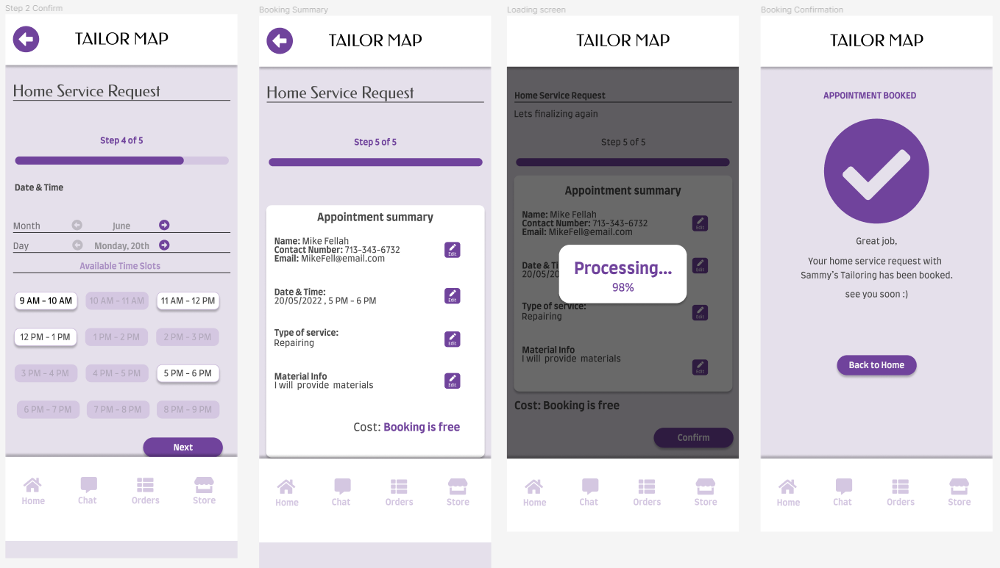
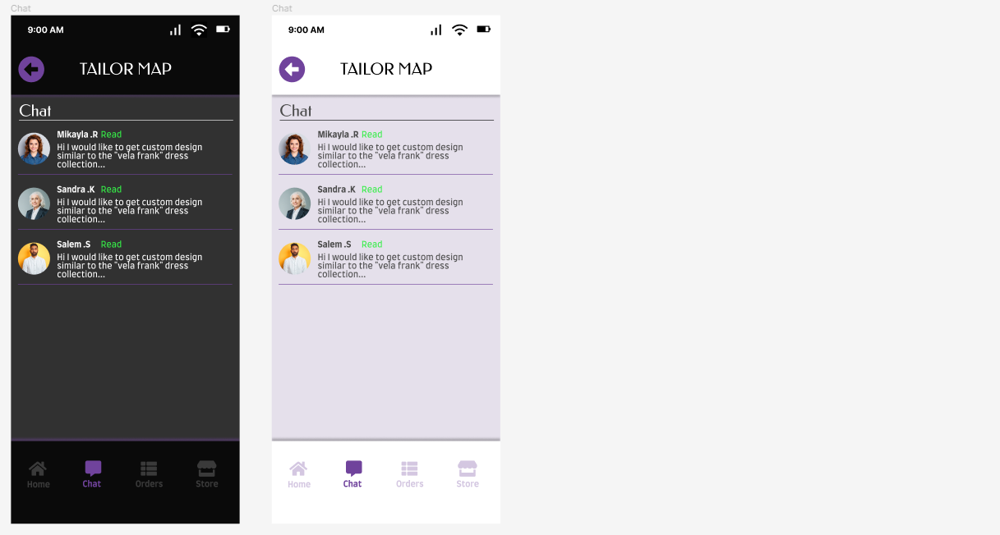

Objective
The Objective of this app was to create a mobile experience that enable user find tailors in thier city, providing access to tailors to also grow thier brands and show case their craft. This was a Solo project that took 1 month to complete, working as researcher and designer.
Target Audience:
- Work class individual who fancy suites
- Traditional event attender looking for garments
- Cosplayers looking to get custom materials
Key Feature:
- Search engine for tailors on city
- Chat function for price negotiation
- Service Request system
- Online store front
- Client management page
- Product tracker for buy/seller.
Brainstorming/ Wireframes
I did some desk research about tailoring to get an overview of the audience and tested out already existing tailoring apps to grasp understanding of userflow first hand. To know what current service already offer and articulate on ways to improve my design to make the brand unique. I created various wireframe ideas based of design layout that was sartisfiying.

 



Sticky Sheet
Created a lought for different elementsin the app to improve and document for consitency. This chat displays button and effects, Font names with sizes and Icons.

Mid- fidelity
A showcase of pages designed based of the wireframe and experimenting with dark mode.




Design review
Feedback from testing expressed the design to be friendly to navigate with a few issue of too much click through. Reducing the amount of click through required was a struggle of finding balance between getting enough data for tailor to work with and having a pag of clustered questions. I probably could use a loop of nested dropdown to solve this issue .